DAMI pracovné odevy · Piešťany · návrh 19. 11. 2026
Rovnaký e-shop, rovnaké produkty, tri rôzne povahy značky. Pri každom smere je úvodná stránka na počítači a na mobile, hlavná fotka a značka v praxi: predajňa, taška, štítok. Vyberte jeden smer. Z ostatných si môžeme požičať jednotlivé prvky.
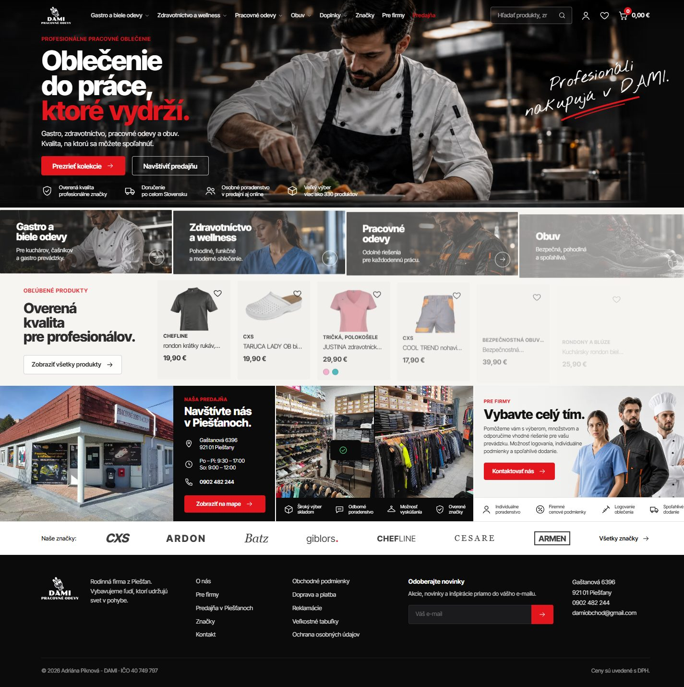
Smer A
Hlasná, sebavedomá predajňa. Červená ruka z Instagramu prechádza na web aj na fasádu a fotky sú zo skutočnej práce, nie z fotobanky.
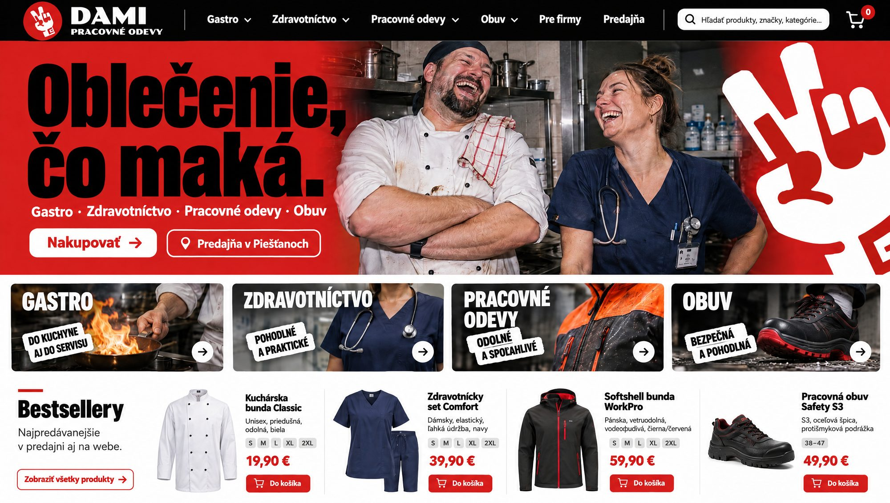
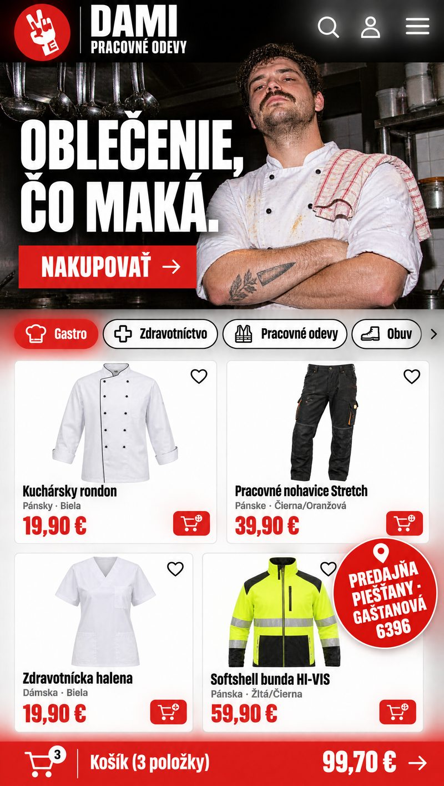
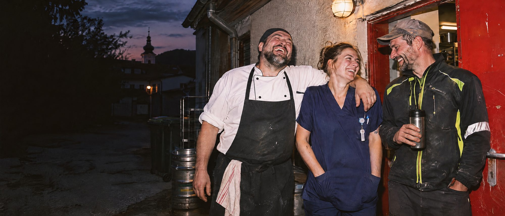
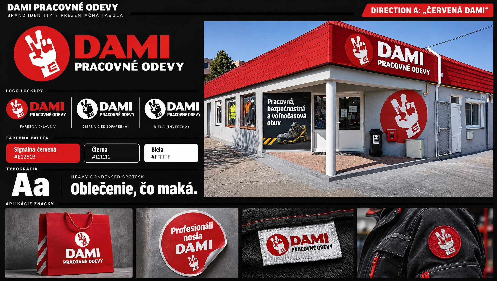
Nadväzuje na Instagram, ktorý už beží. Predajňa sa dá polepiť rovnako a značka je zrazu rozpoznateľná z ulice aj z mobilu.
Stojí na fotkách skutočných ľudí. Treba jedno popoludnie fotenia so zákazníkmi alebo známymi v práci.
Smer B
Pokojná, prémiová krajčírska dielňa. Do popredia ide to, čo iné obchody nemajú: vlastná výroba kuchárskych nohavíc a záster.
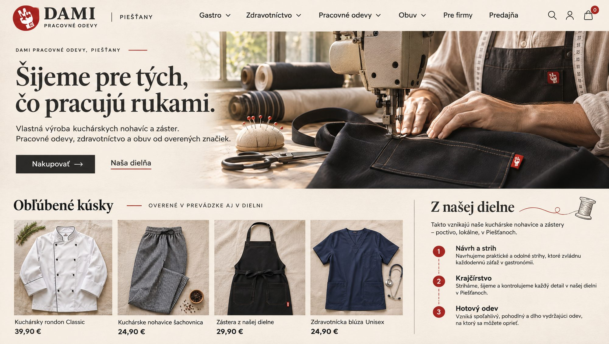
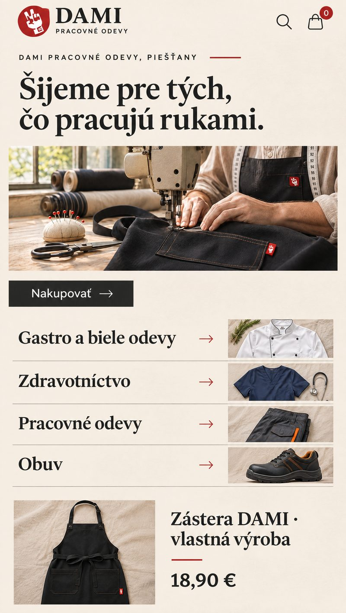
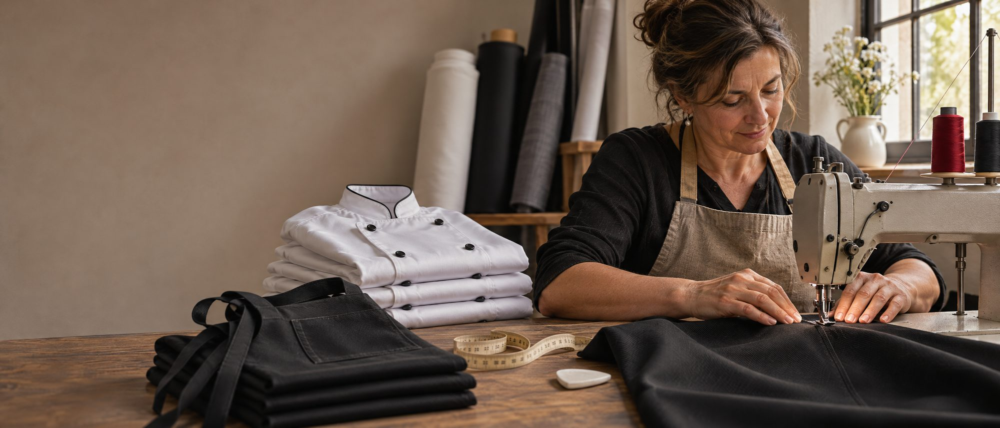
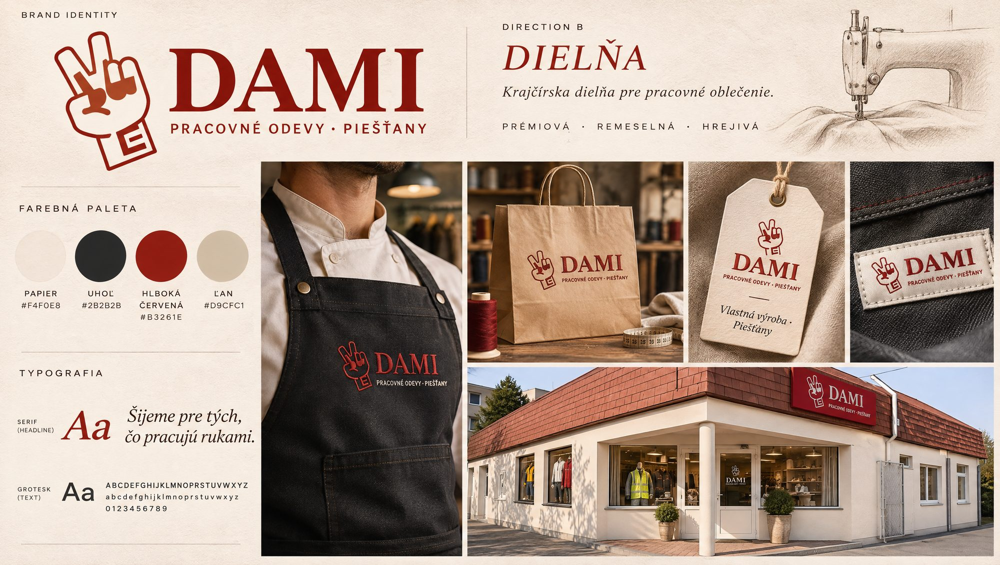
Odlišuje DAMI od veľkých e-shopov s pracovným oblečením. Vlastná výroba je príbeh, ktorý sa dá predať aj reštauráciám.
Je to najväčší posun od dnešného Instagramu. Ruka sa prekreslí do jemnej línie a obsah na sieťach by sa musel upokojiť.
Smer C
Praktický nástroj na nákup. Každé odvetvie má svoju farbu, vyhľadávanie je hore a veľkosti sú hneď na karte produktu.
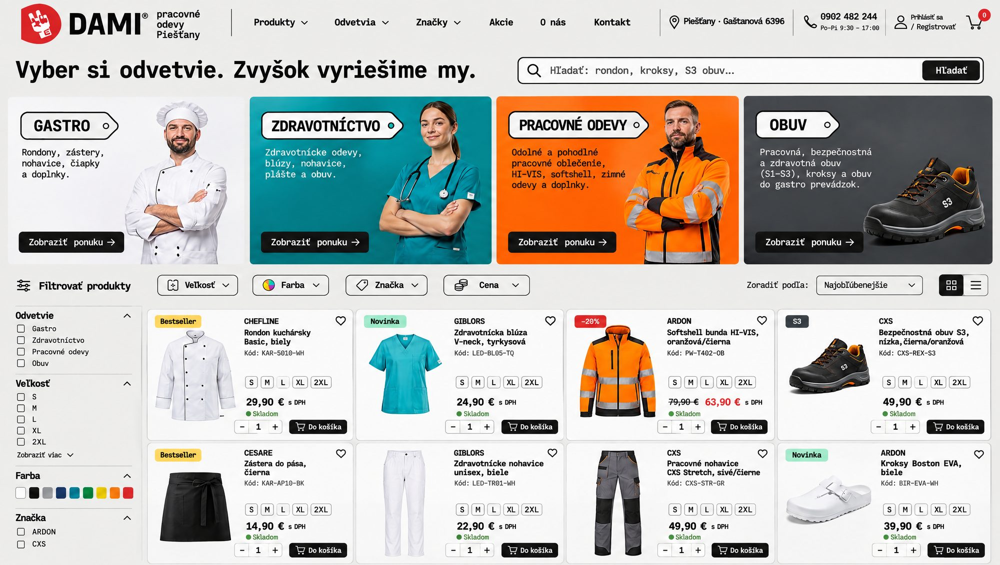
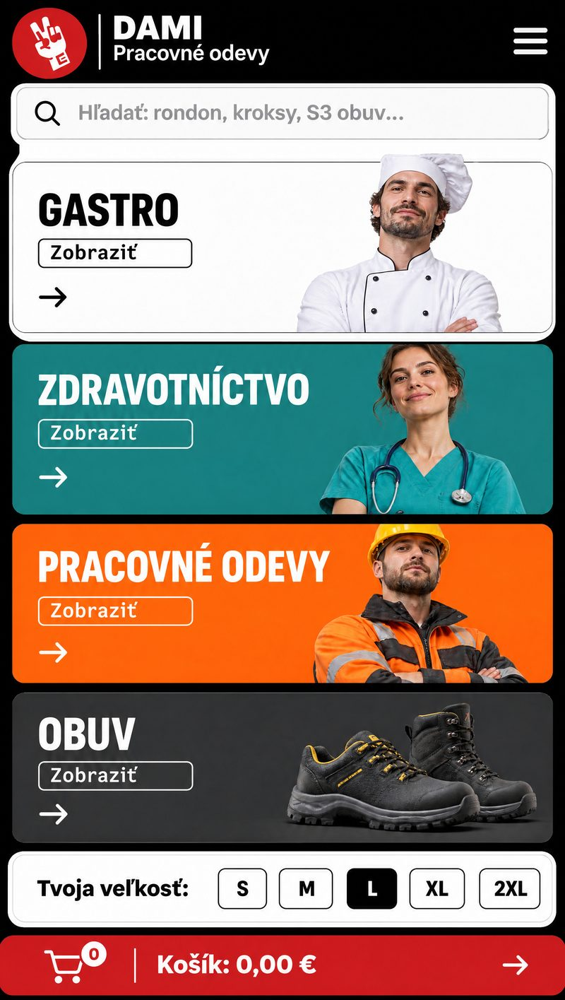
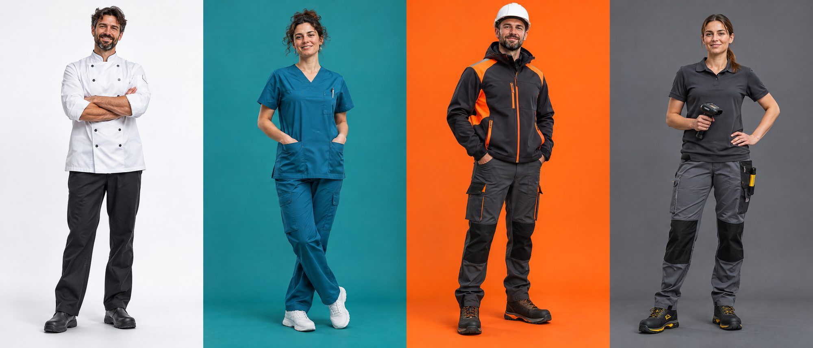
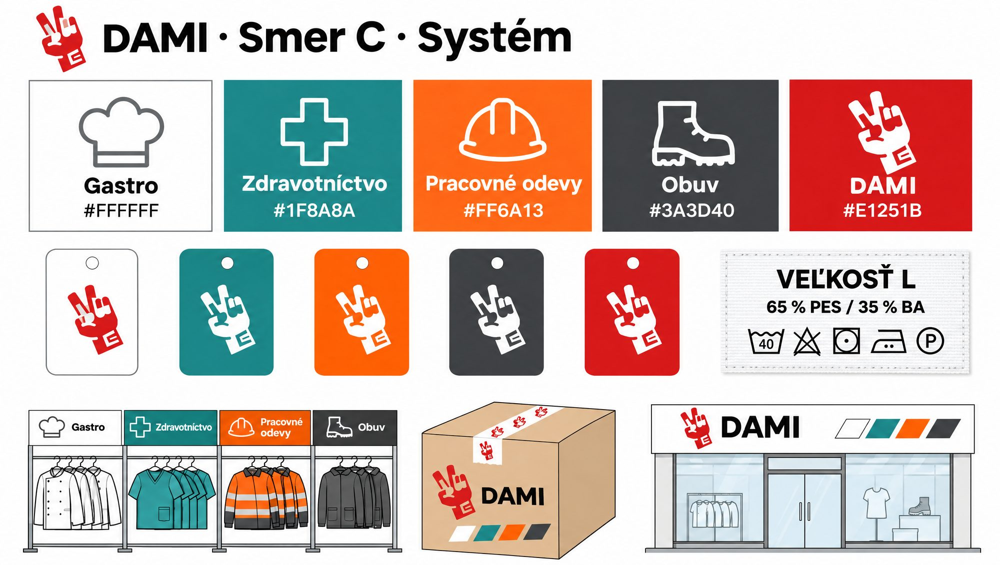
Najrýchlejší nákup pre firmy, ktoré presne vedia, čo chcú. Farby odvetví sa dajú použiť aj v predajni na regáloch.
Pôsobí skôr ako katalóg než ako značka s príbehom. Farby odvetví treba ustriehnuť, aby nezatienili červenú DAMI.
| A · Červená DAMI | B · Dielňa | C · Systém | |
|---|---|---|---|
| Povaha | Hlasná predajňa | Prémiová dielňa | Rýchly katalóg |
| Väzba na Instagram | Priama, pokračuje v ňom | Treba ho preladiť | Čiastočná, cez červenú ruku |
| Fotky | Ľudia v práci, s bleskom | Dielňa, ruky, látky | Ateliér, farebné pozadia |
| Pre koho najlepšie | Jednotlivci aj firmy z okolia | Reštaurácie a hotely | Firmy s opakovaným nákupom |
| Zmena predajne | Červená fasáda a veľká ruka | Svetlá fasáda, decentná tabuľa | Biela fasáda s pruhmi odvetví |
Moje odporúčanie
Červená DAMI nadväzuje na Instagram a predajňu. Z C by som zobral vyhľadávanie hore, veľkosti na karte produktu a farebné odvetvia v menu. Z B sekciu o vlastnej výrobe záster a nohavíc, lebo to je skutočná výhoda DAMI.
Všetky obrázky sú vizualizácie na posúdenie smeru. Ľudia, produkty a fasády sú generované. Do ostrého webu pôjdu skutočné fotky predajne, vašich produktov a ľudí. Ceny a názvy produktov na obrázkoch sú ilustračné.